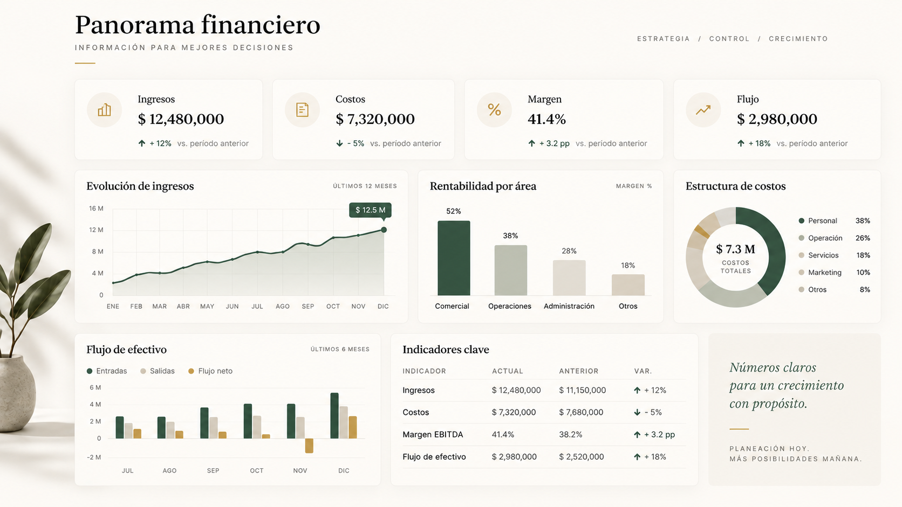

Renza · estrategia financiera y fiscal
Orden financiero, estrategia fiscal y mejores decisiones de negocio.
Ayudo a empresas y empresarios a entender sus números, estructurar costos, identificar riesgos fiscales y ordenar procesos financieros — para tomar decisiones con información antes de que el crecimiento se convierta en descontrol.
Diagnóstico ejecutivo
Reviso tu situación financiera, fiscal y operativa para identificar riesgos y oportunidades concretas.
Proyecto de consultoría
Definimos alcance y entregables sobre el hallazgo específico: estructura, costos, cumplimiento o datos.
Implementación
Ejecutamos el plan de acción, coordinando con tus áreas contables, legales o de operación.
Acompañamiento
Seguimiento mensual o por proyecto, según lo que tu negocio necesite.
Panorama financiero
Así se ve una operación cuando ya puede leerse con claridad.
Estructuramos información financiera, fiscal y operativa para que dirección pueda entender ingresos, costos, margen, flujo y focos de atención sin depender de hojas sueltas o información fragmentada.

Ejemplo ilustrativo del tipo de información que puede ordenarse para análisis, control y toma de decisiones.
Cuatro líneas de trabajo, pensadas para negocios donde la operación ya creció y la administración necesita ponerse a la altura.
Estrategia financiera y fiscal
Análisis de decisiones financieras y sus implicaciones fiscales para empresas, socios y estructuras corporativas: planeación fiscal, estructuras societarias, flujo de recursos e impactos tributarios, evaluados antes de ejecutar la decisión — no después.
Rentabilidad, costos y control financiero
Estructuro la información financiera para entender cuánto gana realmente el negocio, dónde se consume el margen y qué variables necesitan control: costeo, flujo de efectivo, presupuesto, forecast y reporting ejecutivo.
Ordenamiento financiero-fiscal y operativo
Cuando la operación crece más rápido que la administración, diagnostico procesos, información y controles para construir una estructura que pueda escalar — sin que el desorden se convierta en riesgo fiscal.
Datos y automatización financiera
Convierto información dispersa en modelos, reportes y herramientas para administrar con datos, no con intuición — la tecnología resuelve un problema financiero concreto, no reemplaza el diagnóstico.
Experiencia aplicada a operaciones reales
He participado como consultor senior en proyectos financieros, fiscales y operativos para empresas privadas con operaciones complejas.
En uno de ellos trabajé con un fondo de inversión con más de $2,000 millones de pesos en activos bajo gestión y una utilidad bruta anual cercana a $35 millones de pesos, desarrollando análisis financiero y fiscal sobre estructura corporativa, planeación de distribuciones, optimización de IVA y evaluación de alternativas con componentes México–Estados Unidos.
También participé en el ordenamiento financiero, fiscal y operativo de una empresa nacional de servicios médicos ocupacionales con más de 20 clientes corporativos y más de 130 consultorios distribuidos en México, donde el crecimiento de la operación había superado la capacidad de sus controles administrativos.
El trabajo incluyó estrategia de ordenamiento fiscal, estructuración sistémica de costos y organización de información financiera y operativa para mejorar el control y la toma de decisiones.
En ambos casos, el trabajo partió del diagnóstico, continuó con el análisis de riesgos e ineficiencias y terminó en recomendaciones e implementación coordinada con áreas contables, fiscales, legales y operativas.
Por confidencialidad profesional, no se publican nombres de clientes ni información que permita identificar o reconstruir estructuras o estrategias fiscales específicas. Las cifras de escala y resultados se presentan únicamente para contextualizar la experiencia.
Si te reconoces en alguna de estas, probablemente pueda ayudarte:
- “Mi empresa creció, pero mi administración no creció con ella.”
- “Sé cuánto facturo, pero no sé dónde estoy perdiendo margen.”
- “Necesito estructurar costos por cliente, unidad o servicio.”
- “Tengo que tomar una decisión financiera y necesito entender su impacto fiscal antes de ejecutarla.”
- “Necesito ordenar mi situación fiscal antes de que se complique.”
- “Estoy por constituir una empresa y no sé por dónde empezar.”
¿Buscas comprar o vender al mayoreo? Conoce Distribución.
Sobre Renza
Renza es propiedad de Raúl Rentería, asesor fiscal y financiero con cédula profesional, y opera bajo Renza Comercializadora Distribución y Servicios, S.A.S. de C.V.
La idea detrás de Renza es simple: revisar los números antes de que alguien más tenga que hacerlo por ti — un banco, un cliente o el SAT.
Solicitar diagnóstico
Cuéntame brevemente tu situación y te respondo con un diagnóstico inicial y los siguientes pasos.